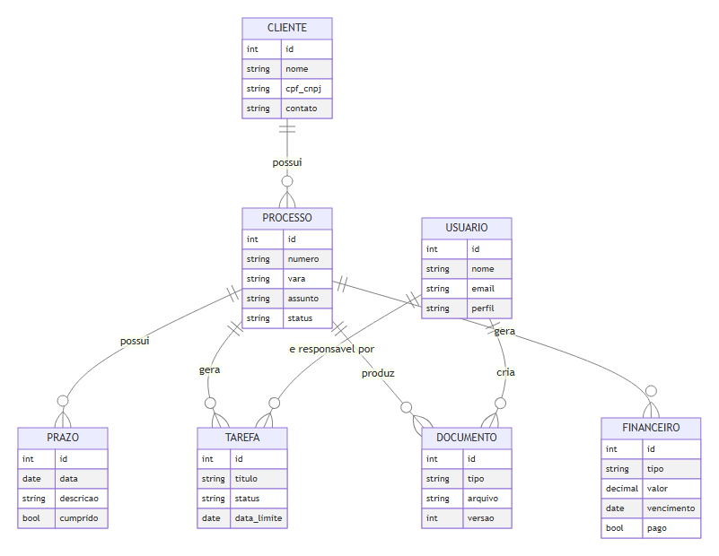
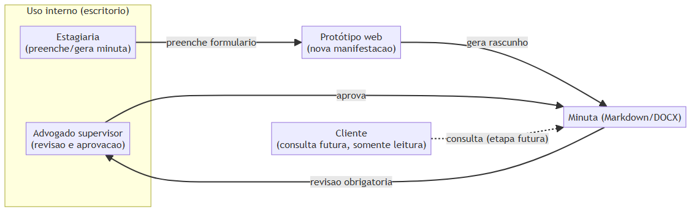

ATA 001 — Reunião inicial e definição do primeiro incremento
Data: 03/08/2026
Projeto: Plataforma local de gestão jurídica e automação assistida
Participantes: Contratante/advogado; estagiário de Engenharia de Software (IA assistida)
Status: Em aberto, aguardando validações e respostas complementares
1. Objetivo informado pelo contratante
Desenvolver uma automação assistida por advogado para auxiliar na criação de petições simples relacionadas ao cumprimento de prazos processuais. A automação deverá apoiar o trabalho jurídico, mas o conteúdo deverá ser revisado e aprovado por advogado antes de qualquer uso ou protocolo.
2. Primeira entrega definida
A primeira entrega será o layout de um novo site, utilizando como referência as cores do modelo DOCX timbrado do escritório. O arquivo do modelo ainda deverá ser disponibilizado para extração das cores e demais elementos visuais.
3. Usuários iniciais
- Mauro Junior Parpinelli — OAB/PR 84.908
- Patricia Karin Gasparotto — OAB/PR 57.659
O acesso inicial será restrito aos dois advogados. Outros perfis poderão ser analisados em etapa futura.
4. Dados mínimos inicialmente identificados
- parte representada pelo advogado (cliente);
- número do processo;
- informações necessárias ao cumprimento do prazo e à elaboração da petição, a serem detalhadas na fase de requisitos.
O controle atual de prazos é realizado em sistema separado desenvolvido pelo contratante. A integração com esse sistema não faz parte da primeira entrega e deverá ser especificada posteriormente.
5. Ambiente definido
- Hospedagem: ambiente local.
- Raiz do servidor:
C:\\inetpub\\wwwroot.
- Primeira fase: layout e organização do site, sem alteração de dados reais.
6. Estágio
O contratante informou que acredita que o estágio seja obrigatório, mas essa informação ainda precisa ser confirmada com a UTFPR. Foi informada disponibilidade de 6 horas diárias, devendo ser confirmados dias da semana, duração, data de início e demais condições formais.
7. Perguntas solicitadas pelo estagiário
- Qual é o modelo DOCX timbrado que servirá de referência visual? Favor disponibilizar uma cópia sem dados pessoais ou sigilosos, se possível.
- Quais tipos de petições simples devem ser priorizados no primeiro protótipo?
- Quais campos, documentos e informações o advogado consulta antes de redigir cada tipo de petição?
- O site deverá apenas gerar um rascunho ou também salvar versões, histórico e documentos?
- Qual fluxo de revisão e aprovação será obrigatório antes de exportar ou utilizar uma petição?
- Como o sistema separado de prazos poderá fornecer dados: banco, arquivo, API ou lançamento manual?
- O servidor local terá banco de dados, HTTPS, rotina de backup e acesso apenas na rede interna?
- Qual tecnologia já existe no sistema de prazos e quais tecnologias são preferidas para o novo site?
- Como serão definidos os requisitos do estágio: obrigatório ou não obrigatório, período, carga semanal e documentação UTFPR?
- Qual será o critério de aceite do layout da primeira entrega?
8. Encaminhamentos
- Contratante: fornecer o DOCX timbrado e responder às perguntas de requisitos.
- Estagiário: preparar a proposta de arquitetura visual e o levantamento inicial de telas após receber o modelo.
- Contratante e estagiário: validar o escopo do MVP antes de iniciar automações com IA.
- Contratante: confirmar formalmente as regras do estágio junto à UTFPR.
9. Observações de segurança e responsabilidade
O sistema tratará dados pessoais e informações processuais. O contratante conduzirá a análise jurídica de LGPD e das obrigações profissionais. O estagiário deverá implementar controles técnicos compatíveis, utilizar dados fictícios ou anonimizados no desenvolvimento e não enviar documentos sigilosos a serviços externos sem autorização. Textos produzidos por IA serão sempre rascunhos sujeitos à revisão do advogado.
10. Próxima reunião
Fica pendente o agendamento após o envio do modelo DOCX timbrado e das respostas às perguntas acima.
11. Anexo técnico — modelo de dados e atores (detalhado posteriormente)
As entidades citadas no item 4 (cliente, processo, prazos) e os perfis do item 3 (advogados) evoluíram, ao longo do estágio, para o modelo de dados e o mapeamento de atores abaixo, documentados em detalhe em docs/modelo-de-dados.md e docs/atores-e-usuarios.md.


Este anexo foi acrescentado após a reunião, para consolidar em um único lugar o raciocínio técnico que partiu das respostas registradas aqui. O perfil "advogado" do diagrama de atores cobre ambos os usuários iniciais listados no item 3.